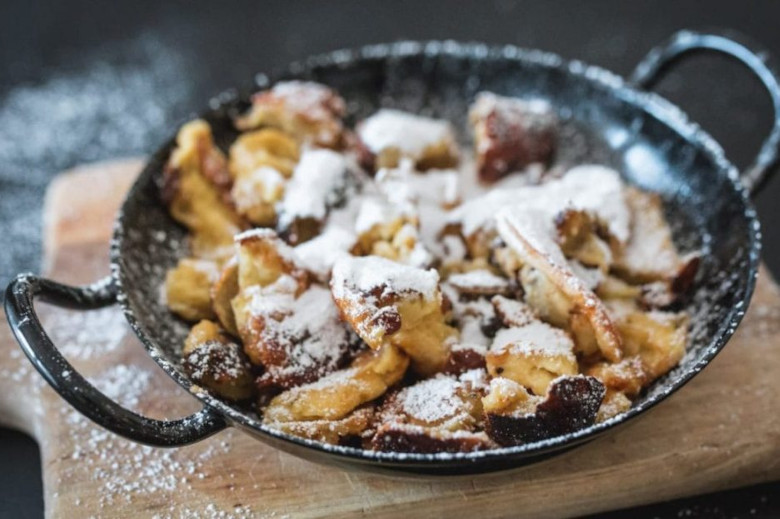
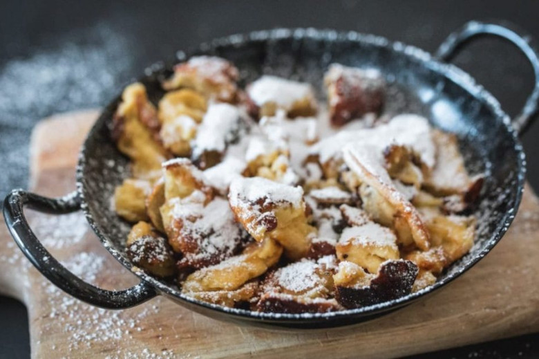

Innsbruck - Sport und Kulinarik
Willkommen in Innsbruck, der pulsierenden Stadt im Herzen der österreichischen Alpen. Innsbruck ist nicht nur für seine malerische Lage umgeben von majestätischen Bergen bekannt, sondern auch für sein vielfältiges Angebot an Outdoor-Sportmöglichkeiten und kulinarischen Genüssen auf den Berghütten.
Outdoor wird groß geschrieben
Die Region rund um Innsbruck bietet eine atemberaubende Naturkulisse, die sich perfekt für Aktivitäten im Freien eignet. Ob Wandern, Bergsteigen, Mountainbiken, Klettern oder Paragliding - hier findet jeder Outdoor-Enthusiast sein persönliches Abenteuer. Die umliegenden Berge und Täler bieten unzählige Routen und Wege, die es zu erkunden gilt. Von gemütlichen Spaziergängen bis hin zu anspruchsvollen Gipfelbesteigungen ist für jeden Schwierigkeitsgrad und Geschmack etwas dabei.
Traditionelle Tiroler Küche
Nach einem aktiven Tag in den Bergen können Sie sich auf eine kulinarische Reise auf den Berghütten begeben. Die Hüttenwirte verwöhnen Sie mit regionalen Spezialitäten und traditionellen Gerichten. Genießen Sie deftige Almkäseplatten, herzhafte Jausenbrettl mit hausgemachtem Speck und frisches Bauernbrot. Probieren Sie Tiroler Knödel in verschiedenen Variationen oder lassen Sie sich von der Vielfalt der österreichischen Küche überraschen. Gönnen Sie eine erfrischende Almbutter-Milch oder ein kühles Bier.
 


Innsbruck bietet somit die perfekte Kombination aus sportlichen Aktivitäten in der Natur und genussvollen Erlebnissen auf den Berghütten. Tauchen Sie ein in die faszinierende Bergwelt, atmen Sie die frische Bergluft ein und lassen Sie sich von der Tiroler Gastfreundschaft verwöhnen. Egal, ob Sie ein erfahrener Outdoor-Enthusiast oder ein neugieriger Neuling sind, Innsbruck und seine Berghütten laden Sie ein, die Schönheit der Natur zu entdecken und gleichzeitig die köstlichen Speisen und Getränke der Region zu genießen. Bereiten Sie sich darauf vor, unvergessliche Abenteuer in der Natur zu erleben und Ihren Gaumen mit den Aromen der Tiroler Küche zu verwöhnen. Innsbruck erwartet Sie mit offenen Armen und einer Fülle an Outdoor-Sport- und kulinarischen Erlebnissen auf den Berghütten.